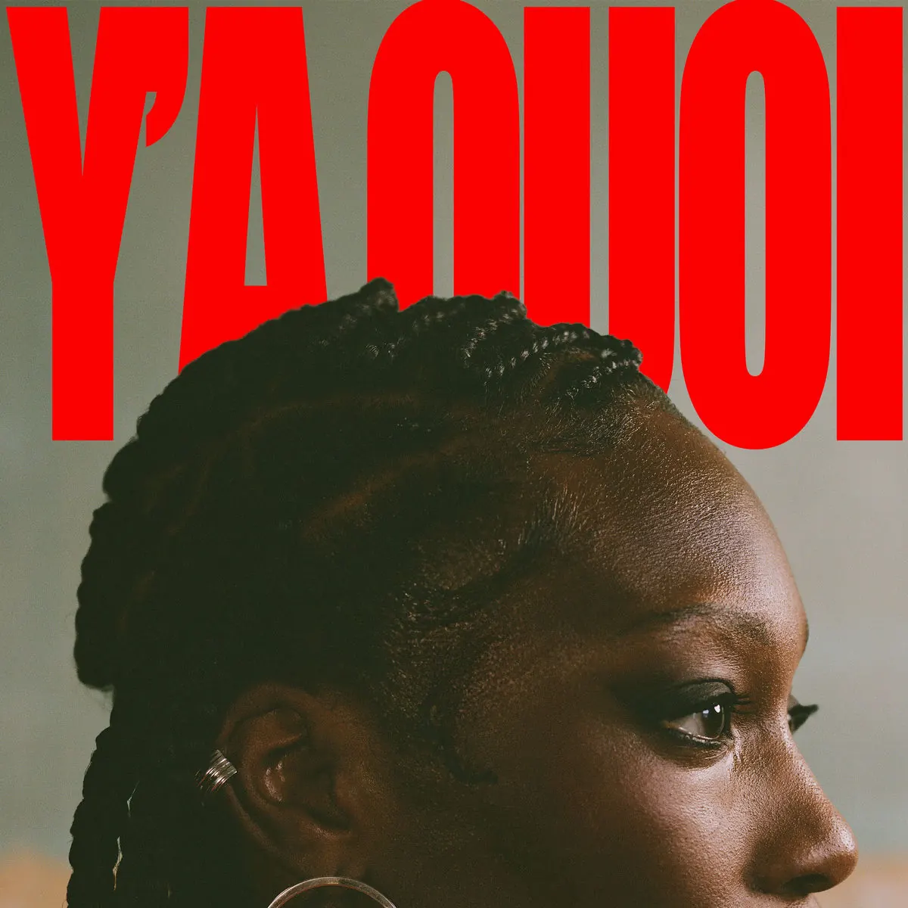

Publié le 6 novembre 2026

Juste Shani vient de publier début novembre 2026 le clip de son single « Y'a Quoi ? ». La vidéo accompagne un morceau d'égotrip incisif produit par Albatar.
Pourquoi le clip de Y'a Quoi marque-t-il les esprits ?
La réalisation confiée à Steven Kali et Sacha Andres choisit le second degré. Le visuel met en scène le propre chien de l'artiste dans plusieurs fonctions inattendues. L'animal y apparaît tour à tour comme chauffeur de voiture, DJ en studio et compagnon de route.
Cette mise en scène absurde tranche avec la fermeté du texte. Juste Shani y enchaîne des lignes directes et sans détour face aux remarques de ses opposants. La présence de son chien comme partenaire visuel apporte une touche d'humour noir qui évite les postures trop lourdes habituelles de l'égotrip.
Le titre s'attaque également à la fétichisation des femmes noires dans l'industrie musicale. L'artiste rejette les étiquettes avec une ironie mordante. Selon la chaîne YouTube officielle de Juste Shani, cette production visuelle prolonge le succès du single sorti quelques semaines plus tôt sur les plateformes de streaming.
Où se situe ce morceau dans le parcours de Juste Shani ?
Originaire de Wissous dans l'Essonne, la rappeuse a commencé à se faire connaître avec le titre Sélection Féminine en 2019. Elle a publié son premier EP Nuits Blanches au mois d'avril 2024. Son écriture s'est développée autour de thèmes sociétaux et d'une présence technique affirmée.
Le titre Y'a Quoi est arrivé sur les plateformes mi-octobre 2026 avant la mise en ligne de son image. Selon sa page Wikipédia, ce projet s'inscrit au milieu d'une tournée de plus de 25 dates à travers la francophonie. L'artiste confirme ainsi sa capacité à tenir un rythme élevé de sorties.
Pour suivre le calendrier des prestations scéniques des rappeurs indépendants, vous pouvez consulter notre agenda des concerts rap mis à jour régulièrement. Cette présence régulière sur scène renforce l'impact de ses morceaux récents auprès du public.
| Poste | Intervenant |
|---|---|
| Artiste principale | Juste Shani |
| Production musicale | Albatar |
| Réalisation du clip | Steven Kali & Sacha Andres |
| Structure de distribution | Carte Blanche / Belem Music |
Quelle place l'égotrip occupe-t-il dans son écriture ?
Dans l'univers de Juste Shani, l'égotrip ne sert pas uniquement à afficher de l'assurance. C'est un outil de réponse directe aux préjugés et aux critiques récurrentes. Le morceau prend à partie ceux qui remettent en cause sa légitimité ou cherchent à dicter son attitude.
L'équilibre entre la sévérité des punchlines et la légèreté des images montre une bonne gestion de la dérision. La rappeuse ne cherche pas l'affrontement premier degré. Elle préfère répondre avec distance et punchlines ciblées.
Ce choix esthétique permet de renouveler son registre sans altérer le fond de son propos. Le morceau parvient à combiner indépendance artistique et efficacité rythmique destinée au public en concert.